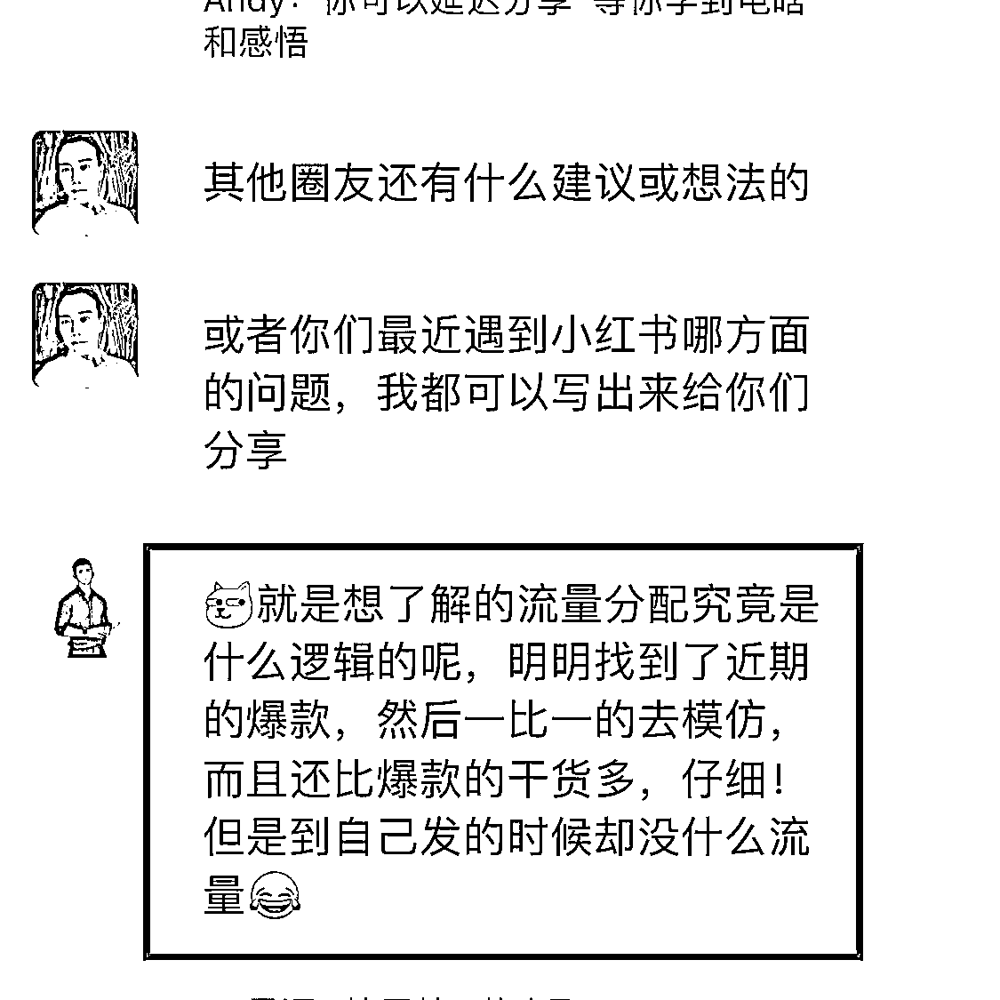
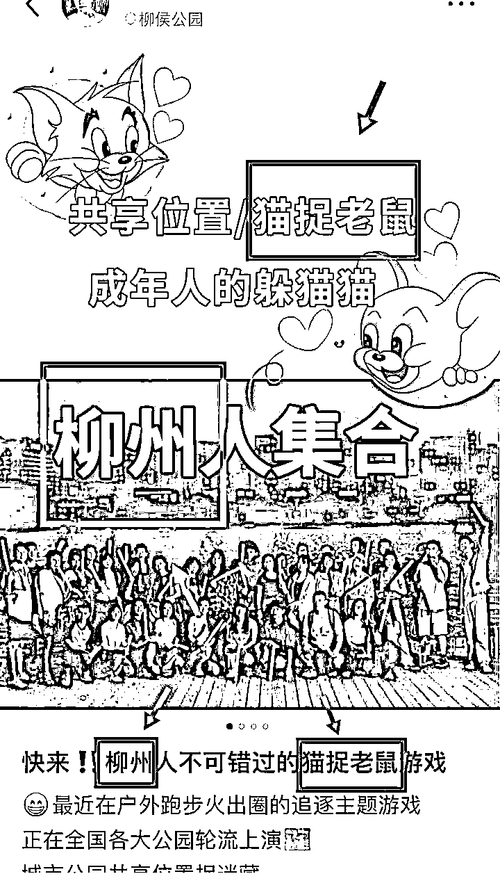
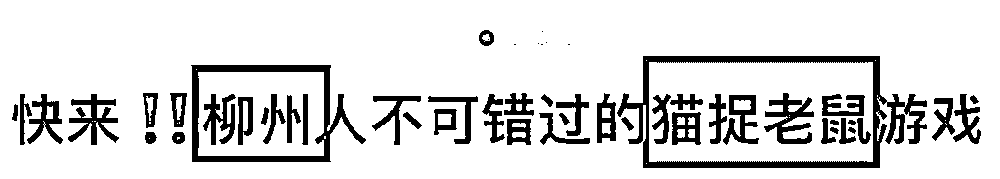
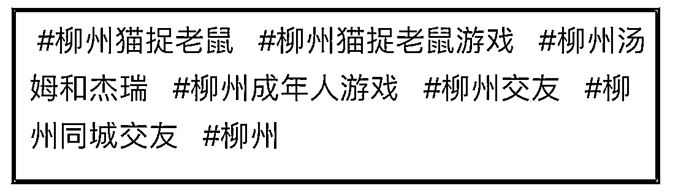
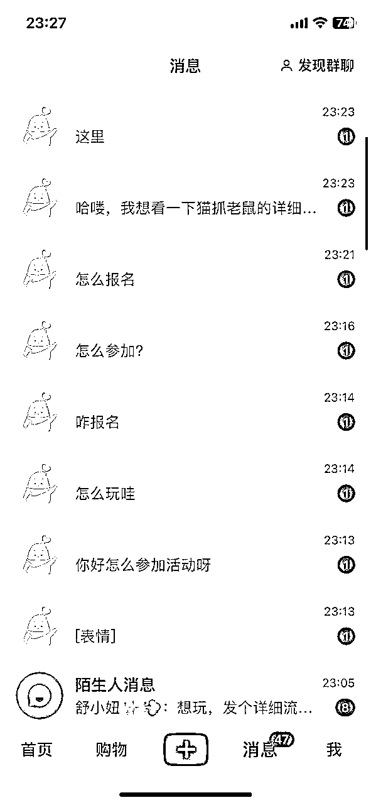

来源：https://nivut760ftk.feishu.cn/docx/C4GZdzUPJoOt8wxInZscLzRJnQe
哈喽大家好，我叫艾小飞，擅长小红书引流
今天来给大家分享一篇《小红书流量的底层逻辑》 为什么会想到分享这个主题呢？
因为有圈友提出了这个问题

意思是说，他不太懂小红书推荐流量的机制是什么？
流量是通过哪些关键因素所影响的
OK，既然提到这个问题，我想到可能还有很多圈友，小红书做到现在都不懂平台是怎么给你流量的
认为平台能给我流量，我就开心，不给我流量，我就认为它很玄学，全靠命
有这样想法的圈友也很正常，毕竟当时我也是这么想的哈哈
当我摸清平台的流量机制后，就不会有刚刚那种想法了，更不会觉得小红书流量是个玄学了 其实平台它是有一套底层逻辑算法的，只要真正的去了解它，才能让自己做小红书更容易获得爆款
接下来我会用我的经验和认知，来分享平时我们发的笔记，是怎么获得平台流量的，有哪些关键的因素所决定的，怎么样才能获得更多的流量
我先来说说小红书的流量结构吧
总共分为两个大点，分别是【推荐流量】和【搜索流量】
这个大家都懂的吧 只要你的内容足够好，就会获得更多的流量，重点在于你的内容
如果内容不够好，平台也不会给你推荐更多的用户来看的。
那什么才算是好内容？
一句话总结就是：让用户对你的笔记留下痕迹
其实小红书它是没办法做到，每条笔记都通过人工去审核的
因为那样人工成本太高了，也不可能实现的，所以这个时候，他就会借用一套底层逻辑的算法，来帮助找出用户都喜欢的优质内容。
只要你能达到算法数据中的标准，就能获得更多的流量。
相反，如果没达到，就没办法去获得更多的曝光流量。
这个底层逻辑是什么呢？
我在这里我给你们看一个小红书内部的评分公式
这个公式会直接的决定，你每篇笔记的流量能分到多少
公式：
CES 内部评分=点赞数×1分＋收藏数×1分＋评论数×4 分＋转发数×4 分＋关注数×8分。
这公式可能有些圈友看不懂是什么意思，我来简单的给你们解释下。
意思是说，当你的笔记得到一个互动的数据反馈后，平台系统就会给你奖励相应的分数，当分数越高，平台给你的流量就越多，分数低则相反。
我来给你们举个例子吧 比如我现在发了一篇笔记，系统给了我100个基础的流量后。
在100个用户里面，有两个人给我点了“赞”，系统这时就会给我奖励1分+1分=2分
有两个人各自给我“评论”了一句话，系统就会奖励我4+4=8分
有个人还给我点了“关注”，这时系统就给我奖励8分
这些分数总共加起来，你们帮我算算是得了多少分？ 2+8+8等于18分对吧？
OK，那么系统就会拿你的这个分数值，在同账号类别和同时间段发布的账号，进行赛马制对比
如果你的分数比同类型同时间段的更优秀，那么你就会获得平台更多的流量。
相反，如果你的分数低于同行，那么你的流量就会到此为止，停止增长了 这就是小红书推荐流量的底层逻辑
在这里面你发现有哪些不同了吗？
是不是觉得在评分系统里面，“关注”的分数给最高，其次到评论或转发，再次到点赞和收藏，对吧？
不知道你们还记不记得，我之前有分享过一篇文章，是说做小红书不要太在意点赞有多少的。
只在意有多少个评论就行了 为什么我会这么说呢？
因为点赞和收藏，对于流量推送的权重是比较低的。 你想想，我只要获得一个“评论”，就能抵得四个点“赞”的分数
我只要获得一个“关注”，就能抵得八个“收藏”的分数 要做就做分数最高的那个，而不要太在意分数最低的那个。
所以为什么我之前也一直在强调，不要老是太注重笔记的点赞和收藏，那些对你的笔记推送，都起不到根本的作用
想要让你的笔记获得更多的流量，要多发一些有争议性，有共鸣性，让他们看了后都想评论的内容，这才是最核心关键的。
所以在我平时操作小红书的时候，我什么都不看，甚至连小眼睛流量是多少我都不看的，我只关注我的笔记有多少个评论就行了。
OK那么我们来说说第二点
可能有很多圈友都不太清楚，小红书现在其实是很多女生心中的小百度了。
比如想买支口红，到小红书上搜一搜，看看推荐品牌攻略。
比如想去香港旅游，到小红书上搜一搜，看看有什么好吃好玩的
比如想升职加薪，到小红书上搜一搜，看看职场人士的经验分享。
而且小红书的搜索流量占比，居然还跟推荐流量持平，两个加起来基本上占到了整体的90%
夸张吧，我也觉得有点夸张，但它却是事实。
所以想把握好笔记能获得更多的流量，搜索流量是一定不能忽略的 搜索流量怎么做呢？
简单一句话就是：你在笔记中的封面图、内页、标题、正文和标题上，都要加上你这个产品的关键词。
只有你的关键词，出现的次数越多，那么你就会获得平台更高搜索权重的展位。
从而用户搜关键词，前排就是你的笔记
给你们举个我自己的案例 平时看过我文章的圈友，应该知道我在上个礼拜，实操猫捉老鼠的项目时，也是用借用到了这个搜索玩法。
当时在实操的过程中，我提炼出这个项目的两个核心关键词：一个是“柳州”，一个是“猫捉老鼠” 提炼出来后，那么我就会全面的在小红书上布局了，不管是图片还是文案。
提炼出来后，那么我就会全面的在小红书上布局了，不管是图片还是文案。我发张截图给你们看看



你们看看我这篇笔记，只要别人搜索“柳州猫捉老鼠”，那么搜索结果在前排的，大概率都是我写的笔记。
所以当时为什么我能在短短的两个小时内，在不投流的情况下，就能把笔记给引爆。
布局关键词，就是一个很大的关键因素 然后我的笔记又能引起他们的兴趣想评论，当评论区留言的人数越多，我的这篇笔记被推送到的层次就越高，流量就密密麻麻的蜂拥而上了。

所以你们一定要去重视这个搜索流量，要先去提炼出你产品的核心关键词，然后在图片或文案中，多次频繁的提到关键词，给平台收录成功后，就可以坐等流量来了。
OK说完了，推荐流量和搜索流量，其实还有另外一个流量渠道，那就是付费流量
不过我对付费流量这方面，不是非常的擅长，因为我一直以来都是玩自然流的。
但我身边有很多朋友，平时都跟我交流过付费流量的细节问题。
在这里，我也可以简单的给你们分享下。
付费流量基本上有蛮多好处的，你可以把它理解为给平台交了“保护费”，你的账号在很多方面就会得到平台的“保护”
比如说没付过费的笔记，是不能明目张胆去引流的，但是付费的就可以 你发商业的笔记，没有付费过的，会被平台给限流了，但是付过费的就没事。
但他也有个非常不好的点，就是你一旦付了费之后，你的自然流量就会受到很大的波及。
相当于你只要玩起了付费流，基本上就跟自然流无缘了。
还有就是，也不是把钱给了平台，平台就会无条件的给你放开各种条件。
只要你触及到了平台的基本规则，或者是恶意批量的去导流，它照样还是会把你的账号给限流了。
这些是我对付费流量的一些理解，我说的不一定是对的，你们做个参考就可以了
OK清楚了小红书的流量结构后，接下来给你们模拟下，正常发一篇笔记，获得流量的整个流程是什么？
就用我的案例来给你们说说吧 比如像上个礼拜，我想要在小红书上引流那些，喜欢玩猫捉老鼠游戏的人，来到我微信上成交 我发了一篇笔记之后，当时是没有任何流量的，为什么呢？
因为在这5分钟的时间内，平台系统会给我的这篇笔记自动扫描，看看有什么违禁词，有什么平台是不允许发的内容的。
如果我的账号内容能通过，那么平台就会收录到他们的系统上。
如果我的这篇笔记，有平台不允许发的内容，那么就会直接给限流了。
这个时候会看到笔记的小眼睛，显示数字不超过8的 当系统收录我的内容后，平台会在5分钟内，给我推送第一波的基础流量
这个基础流量是多少呢？
这个基础流量是在100到200之间，是每个正常账号都有的一个基础流量。
多次违规的就没有 然后过了10分钟后，系统会在给我推送的这些人里面，统计有多少个是给我笔记互动的
比如有多少个人给我点了赞？比如有多少个人给我留了言？比如有多少个人给我点关注？
这时系统就会在30分钟内，帮我结算一个整体的分数。
用我笔记得到的这个分数，再去跟同类型和同时间段发布的笔记，进行赛马制的对比 优胜劣汰，谁的分数越高，谁就能获得平台更多的流量。
当时我是提前设立好了钩子，引来一波人的评论，比如他们都在留言：“怎么玩”，“怎么报名”，我要玩”等等 评论区已经积累有十多个评论数了，权重越来越高。
没想到又过了30分钟后，陆陆续续的就来了更多的人评论 然后我在用小号去搜索“柳州猫捉老鼠”的关键词，排在第一的，就是我写的笔记。
当时我就暗暗自喜，觉得这事成了 然后我就一直保持在评论区的互动，引导他们来主动的私信找我，同时我也准备好下篇笔记中，布局更多的关键词。
通过关键词搜索来的流量，引导客户去互动，从而得到更多的推荐流量 这个流程你们应该能懂什么意思吧，也就说，推荐流量跟搜索流量，他们两个是相辅相成的，一环扣一环，环环相扣。
你只有布局了搜索关键词，当用户给你互动反馈后，你才会得到更多的推荐流量，这就是小红书流量的底层逻辑。
是不是很简单，对吧。摸清小红书是怎么给你推流的？为什么把你给限流了？你都能在这套逻辑里面，去找到对应的答案。
好了，今天的分享就到这里了。希望你们能借此底层逻辑，能把笔记打造出篇篇爆款！
原创：艾小飞
转载可私信
禁止搬运和抄袭
微信：aifei9977 （记得备注来意）